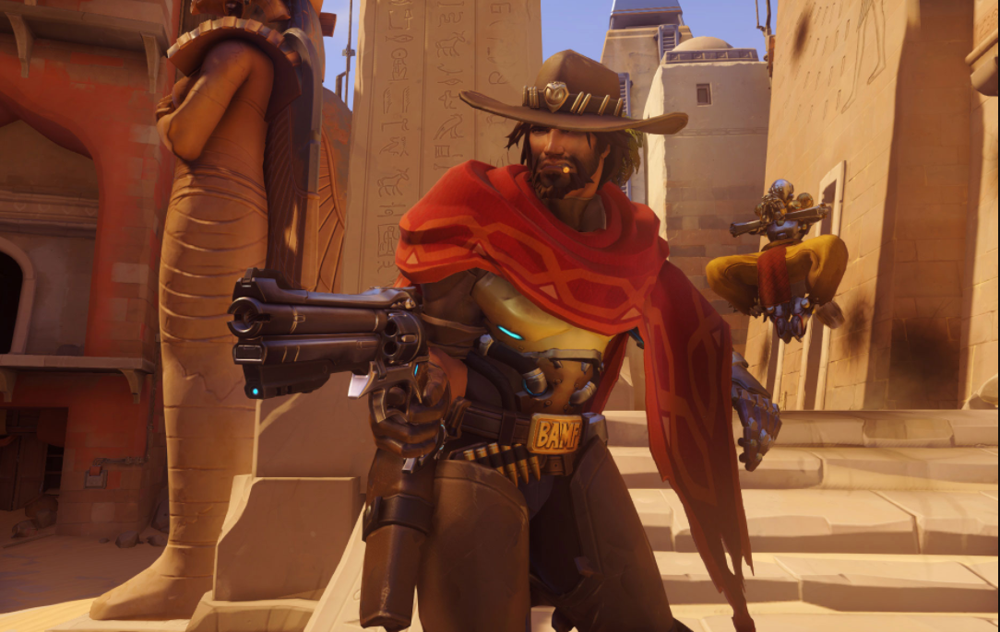

The most popular games from 2016 ranged from triple-A games to pixelated games. These games are either open source games or pay to play games. The games that were the most popular in 2016 fell in the categories of strategy, sports and adventure. These games might be compatiable to virtual reality headsets. In 2016 we saw an increase of demand for virtual reality games which is becoming a strong gaming platform.
The Overwatch image is from playoverwatch.com and was taken without prior permission. All rights reserved.
We also saw a comeback of pixelated games or similar style of graphics from the 1980's which is a surprise, with this demand of these games more and more of small developers are opting for this type of graphics for their games. The top 4 games of 2016 are the following:
However there were games from 2016 that were not so successful and received a poor review from the audience. The audience look for a good storyline, good gameplay/ graphics and how quickly it is to adapt to the environment in the game and the game interface.
The four games from the top 4 games of 2016 list above achieved giving the audience what they wanted in the games either by having the features implemented before release or in an update after the release of the game. However these games disappointed a small portion of the audience as it might not have fulfilled there requests for more depth and features into the game.